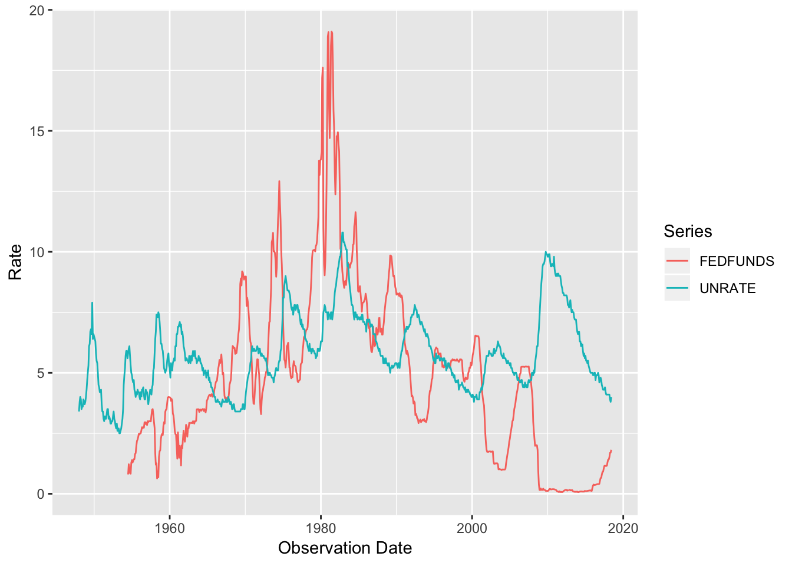

Introduction
fredr provides a complete set of R bindings to the Federal Reserve Economic Data (FRED) RESTful API, provided by the Federal Reserve Bank of St. Louis. The functions allow the user to search for and fetch time series observations as well as associated metadata within the FRED database. The core functions are
-
fredr_set_key()- Set the required FRED API key for the session. -
fredr()orfredr_series_observations()- Fetch a FRED series. -
fredr_series_search_text()- Search for a FRED series by text. -
fredr_request()- Send a general request to the FRED API.
Objects are returned as tibbles. The user is strongly encouraged to read the full FRED API documentation to leverage the full power of fredr and the FRED API.
Authentication
To use fredr and the FRED API in general, you must first obtain a FRED API key. It is also recommended to review the FRED API Terms of Use. Once you’ve obtained an API key, you can set the key as an environment variable using fredr_set_key
where “abcdefghijklmnopqrstuvwxyz123456” is replaced with the actual key you obtain from FRED. This will set the key for the current session. You can persistently set the key by appending the line FRED_API_KEY=abcdefghijklmnopqrstuvwxyz123456 to an .Renviron file in the working directory or at the user level. This can be done using a text editor or by running usethis::edit_r_environ(). If you edit the .Renviron file, remember to either restart the session or run readRenviron(".Renviron") for the changes to take effect.
Retrieve series observations
The fredr() function (an alias for fredr_series_observations()) retrieves series observations (i.e. the actual time series data) for a specified FRED series ID. The function returns a tibble with 3 columns (observation date, series ID, and value).
fredr(
series_id = "UNRATE",
observation_start = as.Date("1990-01-01")
)
#> # A tibble: 342 x 3
#> date series_id value
#> <date> <chr> <dbl>
#> 1 1990-01-01 UNRATE 5.4
#> 2 1990-02-01 UNRATE 5.3
#> 3 1990-03-01 UNRATE 5.2
#> 4 1990-04-01 UNRATE 5.4
#> 5 1990-05-01 UNRATE 5.4
#> 6 1990-06-01 UNRATE 5.2
#> 7 1990-07-01 UNRATE 5.5
#> 8 1990-08-01 UNRATE 5.7
#> 9 1990-09-01 UNRATE 5.9
#> 10 1990-10-01 UNRATE 5.9
#> # ... with 332 more rowsLeverage the native features of the FRED API by passing additional parameters:
fredr_series_observations(
series_id = "UNRATE",
observation_start = as.Date("1990-01-01"),
frequency = "q",
units = "chg"
)
#> # A tibble: 114 x 3
#> date series_id value
#> <date> <chr> <dbl>
#> 1 1990-01-01 UNRATE -0.0667
#> 2 1990-04-01 UNRATE 0.0333
#> 3 1990-07-01 UNRATE 0.367
#> 4 1990-10-01 UNRATE 0.433
#> 5 1991-01-01 UNRATE 0.467
#> 6 1991-04-01 UNRATE 0.233
#> 7 1991-07-01 UNRATE 0.0333
#> 8 1991-10-01 UNRATE 0.233
#> 9 1992-01-01 UNRATE 0.267
#> 10 1992-04-01 UNRATE 0.233
#> # ... with 104 more rowsfredr plays nicely with the tidyverse:
library(tidyverse)
fredr_series_search_text(
search_text = "federal funds",
order_by = "popularity",
sort_order = "desc",
limit = 1) %>%
pull(id) %>%
fredr(series_id = .) %>%
ggplot(data = ., mapping = aes(x = date, y = value, color = series_id)) +
geom_line() +
labs(x = "Observation Date", y = "Rate", color = "Series")Since fredr() returns a tibble with a series ID, mapping fredr() over a vector of series IDs can be achieved as follows:
map_dfr(c("UNRATE", "FEDFUNDS"), fredr) %>%
ggplot(data = ., mapping = aes(x = date, y = value, color = series_id)) +
geom_line() +
labs(x = "Observation Date", y = "Rate", color = "Series")
Using purrr::pmap_dfr() allows you to use varying optional parameters as well.
params <- list(
series_id = c("UNRATE", "OILPRICE"),
frequency = c("m", "q")
)
pmap_dfr(
.l = params,
.f = ~ fredr(series_id = .x, frequency = .y)
)
#> # A tibble: 1,117 x 3
#> date series_id value
#> <date> <chr> <dbl>
#> 1 1948-01-01 UNRATE 3.4
#> 2 1948-02-01 UNRATE 3.8
#> 3 1948-03-01 UNRATE 4
#> 4 1948-04-01 UNRATE 3.9
#> 5 1948-05-01 UNRATE 3.5
#> 6 1948-06-01 UNRATE 3.6
#> 7 1948-07-01 UNRATE 3.6
#> 8 1948-08-01 UNRATE 3.9
#> 9 1948-09-01 UNRATE 3.8
#> 10 1948-10-01 UNRATE 3.7
#> # ... with 1,107 more rowsIt is relatively straightforward to convert tibbles returned by fredr into other time series objects. For example,
library(xts)
gnpca <- fredr(series_id = "GNPCA", units = "log") %>%
mutate(value = value - lag(value)) %>%
filter(!is.na(value))
gnpca_xts <- xts(
x = gnpca$value,
order.by = gnpca$date
)
gnpca_xts %>%
StructTS() %>%
residuals() %>%
acf(., main = "ACF for First Differenced real US GNP, log")
Endpoints
fredr implements functions for all FRED API endpoints. For usage examples for these functions, please consult the relevant vignette:
Finally, fredr is packaged with a list of possible endpoints in the tibble named fredr_endpoints:
fredr_endpoints
#> # A tibble: 31 x 3
#> endpoint type note
#> <chr> <chr> <chr>
#> 1 fred/category Categor… Get a category
#> 2 fred/category/childr… Categor… Get the child categories for a specifie…
#> 3 fred/category/related Categor… Get the related categories for a catego…
#> 4 fred/category/series Categor… Get the series in a category
#> 5 fred/category/tags Categor… Get the tags for a category
#> 6 fred/category/relate… Categor… Get the related tags for a category
#> 7 fred/releases Releases Get all releases of economic data
#> 8 fred/releases/dates Releases Get release dates for all releases of e…
#> 9 fred/release Releases Get a release of economic data
#> 10 fred/release/dates Releases Get release dates for a release of econ…
#> # ... with 21 more rowsView FRED API documentation
To get the most out of the native features of the FRED API, it is highly recommended to review the API endpoint documentation. Within an R session, you can quickly access the web documentation for any endpoint with the convenience function fredr_docs(). The following example will open a web browser to the FRED API documentation page on the series/observations endpoint.
You may also use the params option for fredr_docs to go straight to the endpoint’s Parameters section.
General queries
You can also use the low-level function fredr_request() to run more general queries against any FRED API endpoint (e.g. Categories, Series, Sources, Releases, Tags). The required parameter is endpoint (see fredr_endpoints for a list of valid endpoints) and then all API parameters are passed through as named arguments. For example:
fredr_request(endpoint = "tags/series", tag_names = "population;south africa", limit = 25L)
#> # A tibble: 25 x 16
#> id realtime_start realtime_end title observation_sta… observation_end
#> * <chr> <chr> <chr> <chr> <chr> <chr>
#> 1 LFWA… 2018-07-21 2018-07-21 Work… 2008-01-01 2017-01-01
#> 2 LFWA… 2018-07-21 2018-07-21 Work… 2008-01-01 2017-01-01
#> 3 LFWA… 2018-07-21 2018-07-21 Work… 2008-01-01 2017-10-01
#> 4 LFWA… 2018-07-21 2018-07-21 Work… 2008-01-01 2017-10-01
#> 5 LFWA… 2018-07-21 2018-07-21 Work… 2008-01-01 2017-01-01
#> 6 LFWA… 2018-07-21 2018-07-21 Work… 2008-01-01 2017-01-01
#> 7 LFWA… 2018-07-21 2018-07-21 Work… 2008-01-01 2017-10-01
#> 8 LFWA… 2018-07-21 2018-07-21 Work… 2008-01-01 2017-10-01
#> 9 LFWA… 2018-07-21 2018-07-21 Work… 2008-01-01 2017-01-01
#> 10 LFWA… 2018-07-21 2018-07-21 Work… 2008-01-01 2017-01-01
#> # ... with 15 more rows, and 10 more variables: frequency <chr>,
#> # frequency_short <chr>, units <chr>, units_short <chr>,
#> # seasonal_adjustment <chr>, seasonal_adjustment_short <chr>,
#> # last_updated <chr>, popularity <int>, group_popularity <int>,
#> # notes <chr>By default, fredr_request() will return a tibble. Set to_frame to FALSE to return a generic response object from a httr::GET() request that can be further parsed with httr::content():
library(httr)
fredr_request(
endpoint = "series/observations",
series_id = "UNRATE",
to_frame = FALSE
)
#> Response [https://api.stlouisfed.org/fred/series/observations?series_id=UNRATE&api_key=d3ef3490ef7270cf903d07141e9e7db7&file_type=json]
#> Date: 2018-07-22 04:00
#> Status: 200
#> Content-Type: application/json; charset=UTF-8
#> Size: 79.8 kB